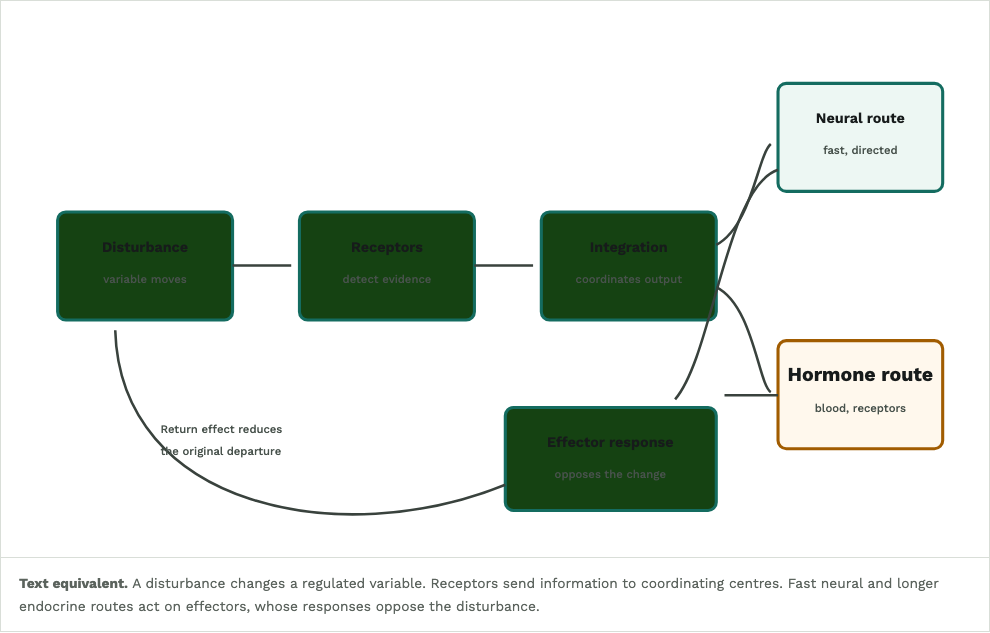
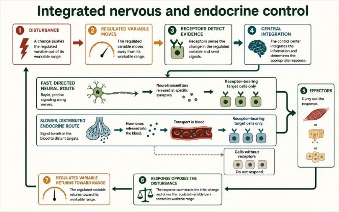

Lesson 1
Integrated nervous and endocrine control
Recommendation: use candidate
Current course figure

ChatGPT candidate

Science review
Pass. Neural and endocrine delivery are separated, hormone action is limited to receptor-bearing cells, and the feedback loop closes correctly.